Основы Future и EventLoop
Асинхронное программирование стало неотъемлемой частью современной разработки, особенно важной для создания отзывчивых пользовательских интерфейсов и эффективной обработки данных.
Dart, будучи однопоточным языком, эффективно справляется с долгими операциями, не блокируя пользовательский интерфейс. Мы изучим ключевые концепции, такие как Future, async/await, Stream и Isolate.
1. Процессы и Потоки
Чтобы понять асинхронность, сначала нужно разобраться с двумя базовыми понятиями: Процесс и Поток.
- Процесс (Process) — это запущенная программа в операционной системе (например, ваш браузер, текстовый редактор или Flutter-приложение). Каждый процесс имеет свою собственную, изолированную память. Это значит, что один процесс не может напрямую получить доступ к данным другого. Однако они могут общаться между собой через системные сообщения. Например, при HTTP-запросе наш процесс обращается к процессу операционной системы, чтобы она загрузила данные из интернета.
- Поток (Thread) — это последовательность выполнения команд внутри процесса. В одном процессе может быть несколько потоков, что позволяет выполнять код параллельно (одновременно), если у вас многоядерный процессор. Например, один поток может заниматься вычислениями, а другой — отрисовкой интерфейса. В любом приложении всегда есть как минимум один поток.
- Многопоточность позволяет запускать несколько потоков одновременно, распределяя “тяжелые операции” между ними для значительного ускорения выполнения.
Ключевой момент заключается в том, что Dart в своей основе является однопоточным языком. Это означает, что весь ваш Dart-код по умолчанию выполняется в одном-единственном потоке. Но как же тогда выполнять "тяжелые" операции, не замораживая приложение? Ответ кроется в асинхронности и изолятах.
2. Что такое асинхронность в Dart
Асинхронность работает в рамках ОДНОГО потока и не подразумевает одновременное выполнение кода. Это возможность не ждать выполнения трудоемкой операции сейчас, а получить результат в будущем, не блокируя другой код.
Аналогия с загрузкой картинки: Представьте, что вы начинаете загружать большую картинку из интернета. В синхронном случае ваше приложение “замирает” и ждет завершения загрузки, прежде чем выполнить следующую строку кода. В асинхронном случае загрузка картинки передается операционной системе и помещается в специальную очередь Event Loop, а ваш код продолжает выполняться. Когда ОС завершит загрузку и подойдет очередь в Event Loop, картинка станет доступной для использования.


Future getDataAsync() async {
// Трудоемкая операция, нужно много времени
var data = await HackingServer();
}
getData() {
// Трудоемкая операция, нужно много времени
var data = HackingServer();
}
print('hello');
getData(); // * Синхронная операция
print('Ok');
// В синхронном случае, на экран попадёт 'hello' и начнётся обработка получения изображений с сервера.
// Всё приложение замирает и ждёт конца выполнения. И только потом на экран попадёт 'Ok'
print('hello');
getDataAsync() // * Асинхронная операция
print('Ok');
// В Асинхронном случае, на экран сразу попадёт 'hello' 'Ok', а выполнение тяжелой операции выполняется в фоне и приложение не зависает
Рассмотрим пример работы синхронной и асинхронной операции в приложении.
1. При нажатии на кнопку Синхронная загрузка начинается выполнение тяжёлой операции, весь UI зависает, ничего не возможно сделать, пока условно не загрузится картинка. Тыкаем на чекбокс, увеличивает счётчик и ничего не происходит.
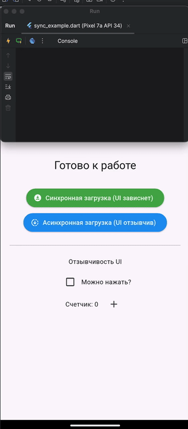
2. При нажатии на кнопку Асинхронная загрузка, UI не замораживается и можно продолжать с ним взаимодействовать без проблем.
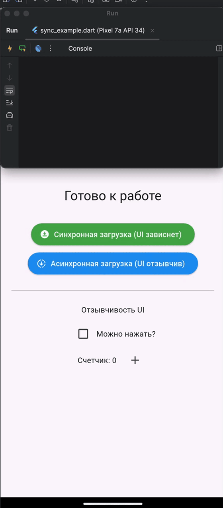
3. Future: Обещание результата
Future — это центральный объект в асинхронном Dart. Он представляет собой "обещание" на получение результата какой-либо операции в будущем.
У Future есть три состояния:
- Незавершенное (Uncompleted): Когда вы вызываете асинхронную функцию, она сразу возвращает
Futureв этом состоянии. Операция еще выполняется. - Завершенное со значением (Completed with a value): Операция успешно выполнена, и
Futureсодержит результат (например, данные из файла). - Завершенное с ошибкой (Completed with an error): Во время операции произошла ошибка, и
Futureсодержит информацию об этой ошибке.
Dart
void main() {
// Эта функция сразу вернет объект Future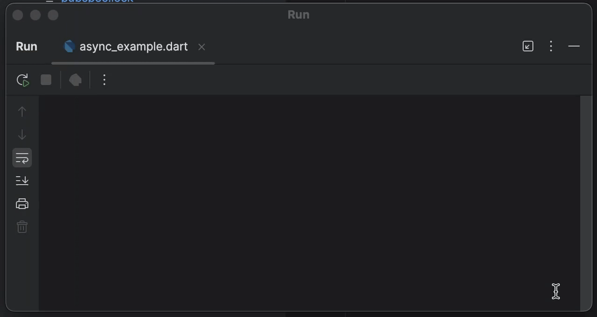
4. Использование async await
Работать с Future через метод .then() может быть громоздко. Для этого в Dart есть ключевые слова async и await — синтаксический сахар, который позволяет писать асинхронный код так, будто он синхронный.
async: Помечает функцию как асинхронную. Такая функция всегда неявно возвращаетFuture.await: Приостанавливает выполнение текущейasync-функции до тех пор, покаFutureне завершится, и "распаковывает" его результат.
await — это как сказать: "Я подожду здесь, пока не придет посылка (Future), а потом продолжу".
Ещё одна прекрасная аналогия для асинхронности — это процесс готовки. Представим, что мы делаем окрошку.
- Синхронный подход: Вы поставили вариться картошку и просто стоите у плиты все 15 минут, неотрывно наблюдая за кастрюлей. Вы больше ничего не делаете. В это время задачи по нарезке огурцов, лука и варке яиц простаивают. Весь процесс готовки заблокирован ожиданием одного — пока сварится картофель.
- Асинхронный подход: Вы ставите вариться картошку и заводите таймер на 15 минут. Сразу после этого ставите вариться яйца в другой кастрюле и заводите второй таймер на 10 минут. Пока оба таймера тикают, вы не ждете, а беретесь за другую работу — нарезаете огурцы и лук. Когда сработает таймер для яиц, вы прерываетесь, чтобы заняться ими. Затем, когда сварится картофель, вы переключаетесь на него. Таким образом, вы эффективно использовали время ожидания.»
Пример с приготовлением окрошки
Dart
// Это быстрая синхронная работа
void chopIngredients() {
print('🥒 Начинаю нарезать огурцы, лук и колбасу...');
print('✅ Все ингредиенты нарезаны!');
}
// Future.delayed() НЕ БЛОКИРУЕТ поток, а создает "обещание" (Future)
Future boilPotatoesAsync() async {
print('🥔 Пока картошка вариться (таймер 15 мин)... делаем другие дела.');
await Future.delayed(Duration(milliseconds: 4500));
print('🔔 Сработал таймер! Картошка сварилась!');
}
Future boilEggsAsync() async {
print('🥚 Пока яйца вариться (таймер 10 мин)... делаем другие дела.');
await Future.delayed(Duration(milliseconds: 4000));
print('🔔 Сработал таймер! Яйца сварились!');
}
void mixIngredients() {
print('🥣 Все ингредиенты готовы. Начинаю смешивать окрошку!');
print('🎉 Окрошка готова!');
}
void main() {
// 1. ЗАПУСКАЕМ обе долгие операции ОДНОВРЕМЕННО.
// Не используем 'await' здесь, чтобы не ждать их завершения.
// Мы получаем "обещания" (Futures), что они когда-нибудь завершатся.
final potatoFuture = boilPotatoesAsync();
final eggFuture = boilEggsAsync();
// 2. ПОКА картошка и яйца варятся, мы НЕ ЖДЕМ, а выполняем другую работу.
// Наш основной поток не заблокирован!
chopIngredients();
// 3. ТЕПЕРЬ, когда вся быстрая работа сделана, нам нужно дождаться
// завершения всех долгих операций, чтобы смешать ингредиенты.
// Используем Future.wait для ожидания завершения всех Future.
Future.wait([potatoFuture, eggFuture]).then((_) {
// Выполнится ТОЛЬКО после того, как potatoFuture и eggFuture завершатся.
mixIngredients();
});
// Этот принт может появиться до mixIngredients
print('Ожидаем завершения приготовления...');
}
Вывод
🥔 Пока картошка вариться (таймер 15 мин)... делаем другие дела.
🥚 Пока яйца вариться (таймер 10 мин)... делаем другие дела.
🥒 Начинаю нарезать огурцы, лук и колбасу...
Ожидаем завершения приготовления...
🔔 Сработал таймер! Яйца сварились!
🔔 Сработал таймер! Картошка сварилась!
🥣 Все ингредиенты готовы. Начинаю смешивать окрошку!
🎉 Окрошка готова!
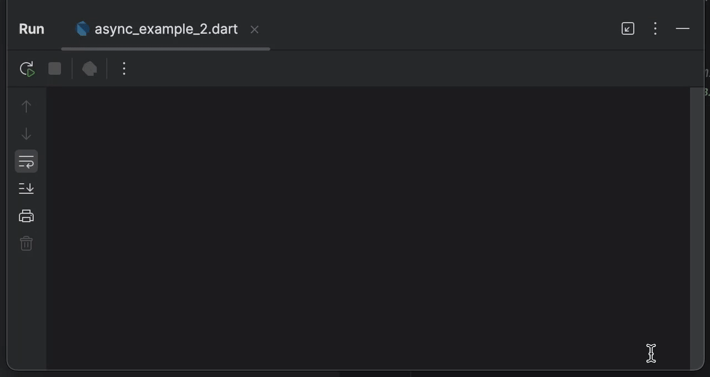
5. Обработка ошибок
В асинхронном коде ошибки — обычное дело (например, нет интернет-соединения). Их нужно правильно обрабатывать.
1. С async / await — блок try-catch
Cамый естественный и читаемый способ.
Dart
Future performTasksWithError() async {
try {
print('Начинаем...');
// Имитируем операцию, которая завершится ошибкой
String result = await Future.delayed(const Duration(seconds: 2), () {
throw Exception('Не удалось загрузить данные!');
});
print(result); // Эта строка никогда не выполнится
} catch (e) {
// Ловим ошибку, выброшенную из Future
print('Произошла ошибка: $e');
} finally {
// Этот блок выполнится всегда, независимо от ошибки
print('Операция завершена.');
}
}
Вывод
Начинаем...
Произошла ошибка: Exception: Не удалось загрузить данные!
Операция завершена.
2. С Future API — метод .catchError()
Aльтернатива для кода, написанного в стиле цепочек вызовов.
Dart
void performTasksWithCatchError() {
print('Начинаем...');
Future.delayed(const Duration(seconds: 2), () {
throw Exception('Не удалось загрузить данные!');
})
.then((value) => print('Успех!')) // Этот блок будет пропущен
.catchError((e) => print('Произошла ошибка: $e'))
.whenComplete(() => print('Операция завершена.'));
}
Вывод
Начинаем...
Произошла ошибка: Exception: Не удалось загрузить данные!
Операция завершена.
6. Модель выполнения в Dart: Event Loop
Вспомним подходы к приготовлению окрошки в наших прошлых примерах
- Синхронный подход: Вы поставили вариться картошку и просто стоите у плиты все 15 минут, неотрывно наблюдая за кастрюлей. Вы больше ничего не делаете. В это время задачи по нарезке огурцов, лука и варке яиц простаивают. Весь процесс готовки заблокирован ожиданием одного — пока сварится картофель.
- Асинхронный подход: Вы ставите вариться картошку и заводите таймер на 15 минут. Сразу после этого ставите вариться яйца в другой кастрюле и заводите второй таймер на 10 минут. Пока оба таймера тикают, вы не ждете, а беретесь за другую работу — нарезаете огурцы и лук. Когда сработает таймер для яиц, вы прерываетесь, чтобы заняться ими. Затем, когда сварится картофель, вы переключаетесь на него. Таким образом, вы эффективно использовали время ожидания.»
Как Dart управляет этими "отложенными" задачами? С помощью механизма под названием Event Loop (Цикл Событий).
Когда запускается Dart-приложение, создается главный Изолят (о нем позже), который инициализирует две очереди:
- Event Queue (Очередь событий) — для внешних событий: операции ввода-вывода, жесты, таймеры, сетевые запросы. Сюда попадают все
Future. - Microtask Queue (Очередь микрозадач) — для очень коротких внутренних действий, которые нужно выполнить немедленно после текущей операции, но до того, как обработать следующее событие.
Очередь Microtask всегда имеет приоритет перед очередью Event.
Цикл Event Loop работает непрерывно по простому алгоритму:
Dart
// Псевдокод, объясняющий логику Event Loop
void eventLoop() {
// Пока приложение работает, цикл повторяется
while (true) {
// 1. Сначала проверяем очередь микрозадач.
// Если не пуста, выполняем самую старую микрозадачу и начинаем цикл заново.
if (microtaskQueue.isNotEmpty) {
executeFirstMicrotask();
continue; // Возвращаемся к началу, чтобы снова проверить Microtask Queue
}
// 2. Только если очередь микрозадач ПУСТА, смотрим в очередь событий.
if (eventQueue.isNotEmpty) {
executeFirstEvent();
}
}
}
Этот механизм гарантирует, что важные внутренние задачи (микрозадачи) выполняются как можно скорее, а основной поток не блокируется в ожидании долгих операций из очереди событий.
Теперь давайте на основе аналогии про готовку окрошки разложим по полочкам, как работает Event Loop в Dart.
- Повар = Основной поток (Main Thread) Единственный работник на кухне. Он может выполнять только одну задачу в один момент времени.
- Нарезка огурцов и лука = Синхронный код Это быстрые операции, которые повар выполняет немедленно и последовательно. Пока он режет лук, он не может делать ничего другого.
- Команда "поставить вариться картошку/яйца" = Инициация асинхронной операции Это как вызов
http.get()илиFile.readAsString(). Повар не варит картошку сам — он делегирует эту работу плите (внешней системе, например, операционной системе для I/O или сети). - Таймеры на 15 и 10 минут = Объекты
FutureКогда повар ставит таймер, он получает "обещание" (Future), что через указанное время что-то произойдет. - Звон таймера = Событие в Очереди Событий (Event Queue) Когда таймер срабатывает, событие помещается в очередь событий.
- Рецепт голове у повара = Цикл Событий (Event Loop) Это внутренний механизм, который постоянно спрашивает:
- Есть ли срочные микрозадачи (Microtask Queue)? (Например: "ой, соль забыл добавить, секунду").
- Если нет, то есть ли в моей очереди событий (Event Queue) сработавшие таймеры (завершенные
Future)?
Как это работает вместе
- Начало: Повар (основной поток) начинает выполнять рецепт (функцию
main()).
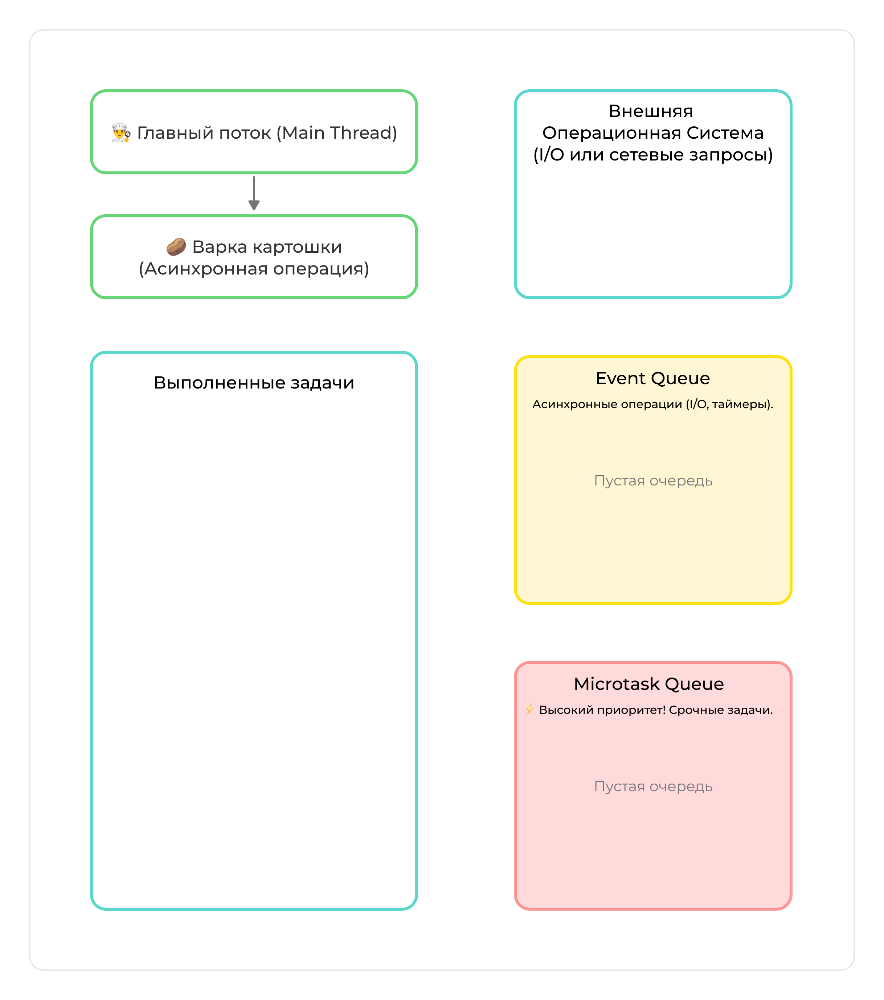
- Запуск асинхронной задачи: Пункт "сварить картошку". Он дает команду плите, ставит таймер на 15 минут (
Future) и сразу же идет дальше по рецепту. Он не ждет перед плитой пока сварится картошка - Тоже самое для пункта "Сварить яйца"
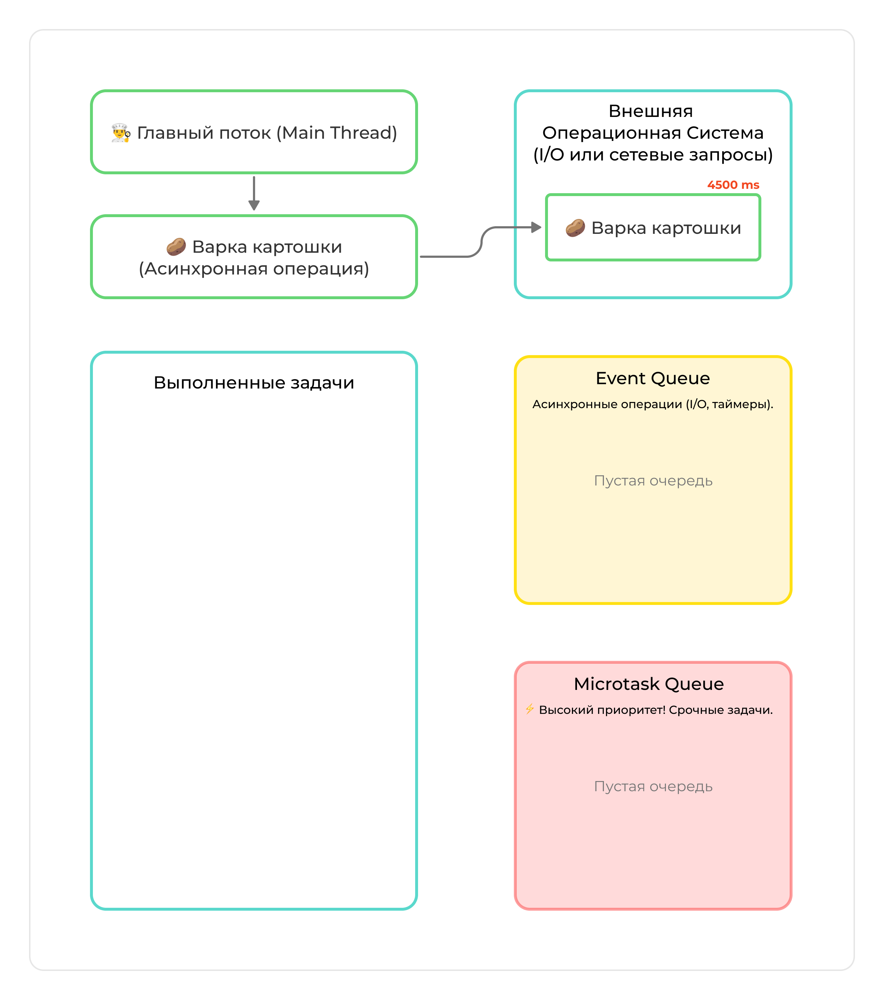
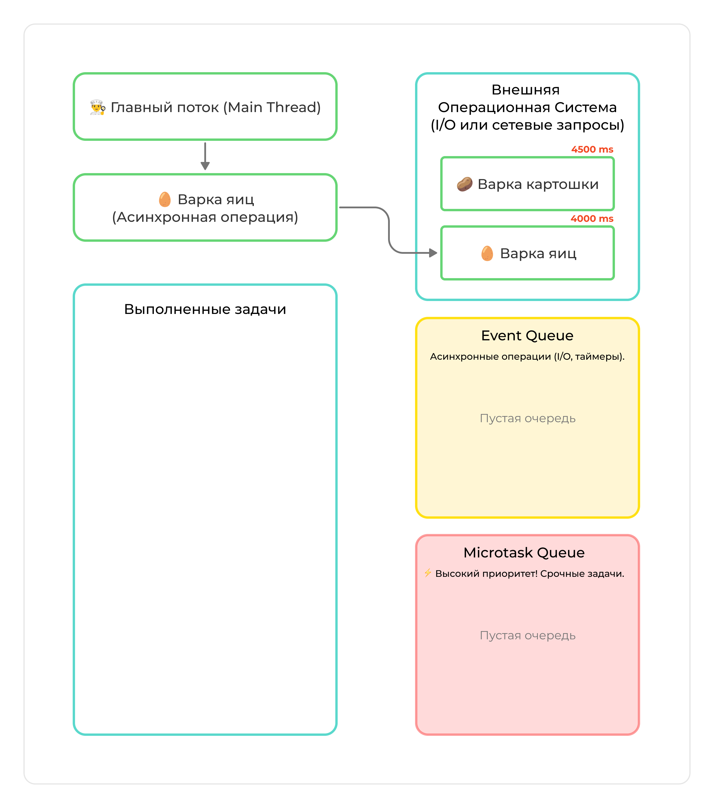
- Выполнение синхронного кода: Теперь поток свободен, и повар начинает резать огурцы и лук (выполняет синхронный код, который идет после вызова асинхронной функции).
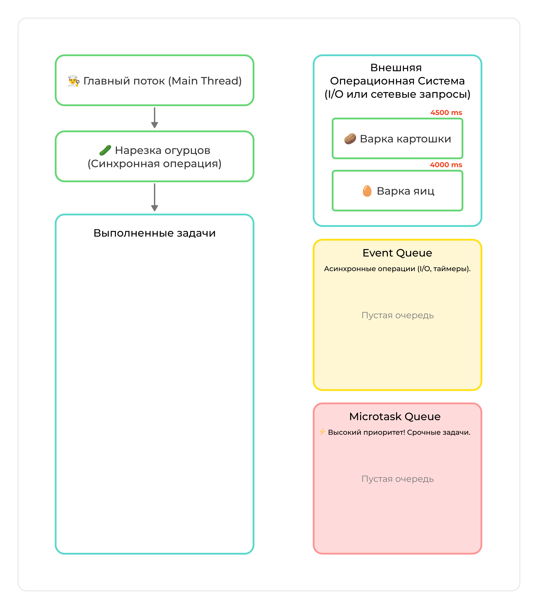
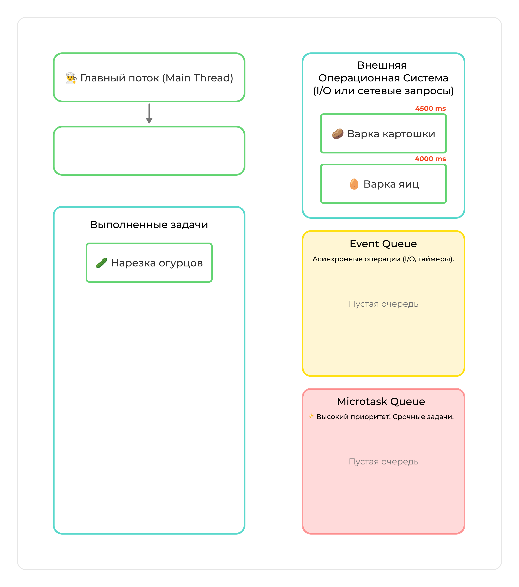
- Событие: Через 10 минут звенит таймер для яиц. Это событие (
Event) попадает в Event Queue. (Будет 1й в очереди) - Событие: Через 15 минут звенит таймер для картошки. Это событие (
Event) попадает в Event Queue. (Будет 2й в очереди)
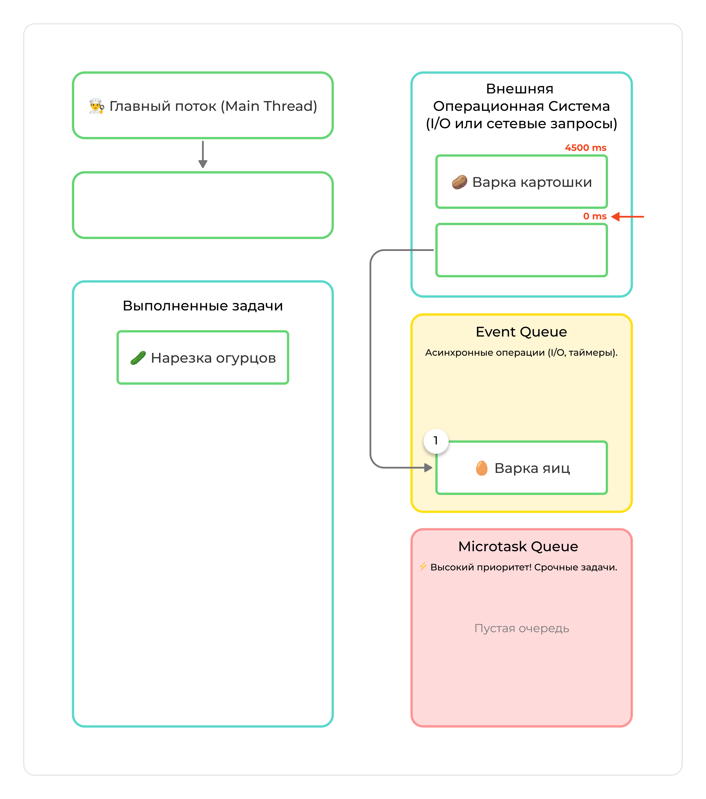
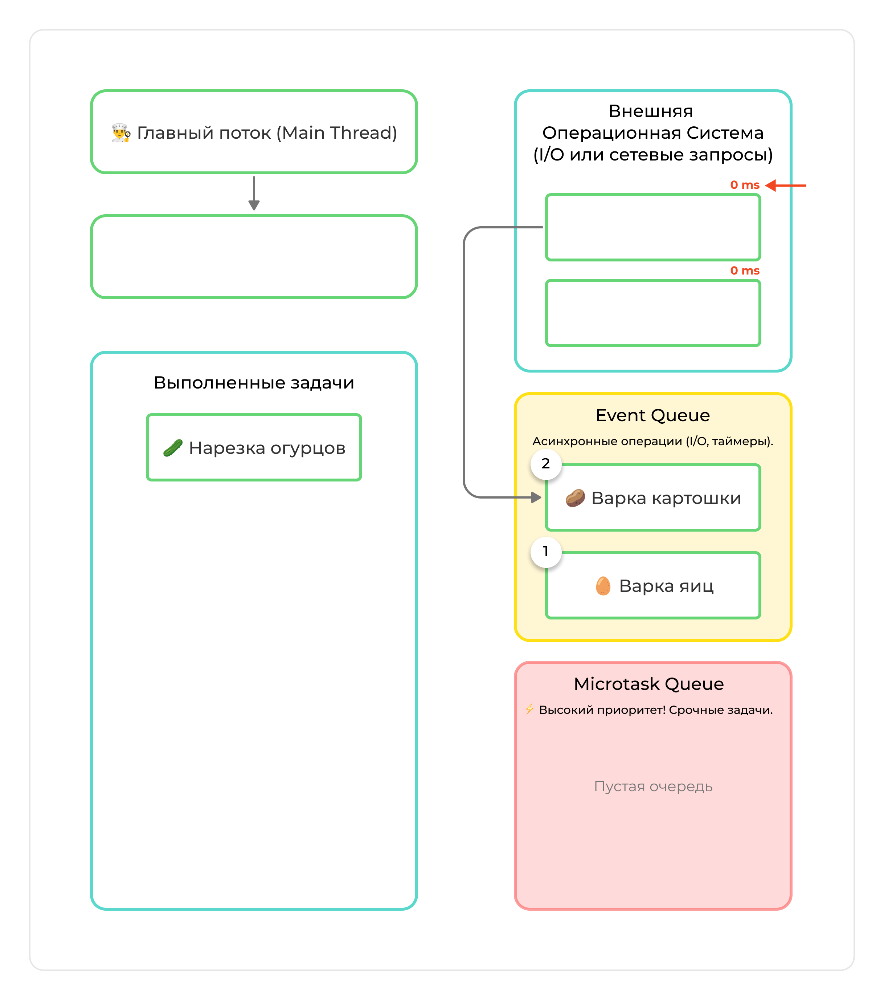
- Обработка события: Как только повар закончит нарезать текущий огурец (завершит текущую синхронную операцию), нужно проверить очередь микротасков и очередь событий. В очереди событий сейчас ждут два действия, но в это момент выполняется микротаска "Добавить соль", а очередь микротасков имеет больший приоритет, поэтому выполняется сначала действие от туда
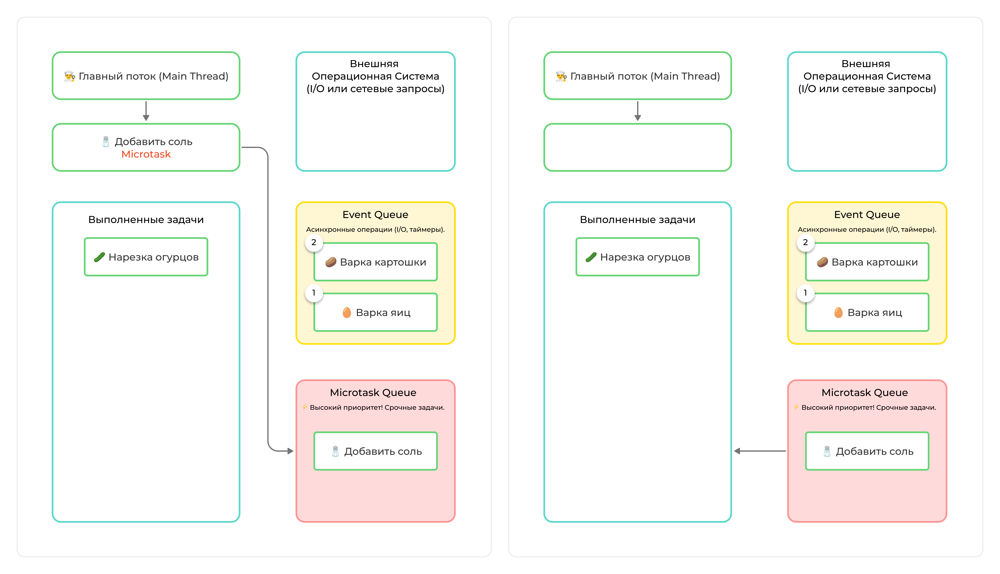
- Теперь Event Loop проверит очередь событий. Он увидит событие "яйца сварились", возьмет его из очереди и начнет выполнять соответствующий код, тоже самое для события "картошка сварилась."
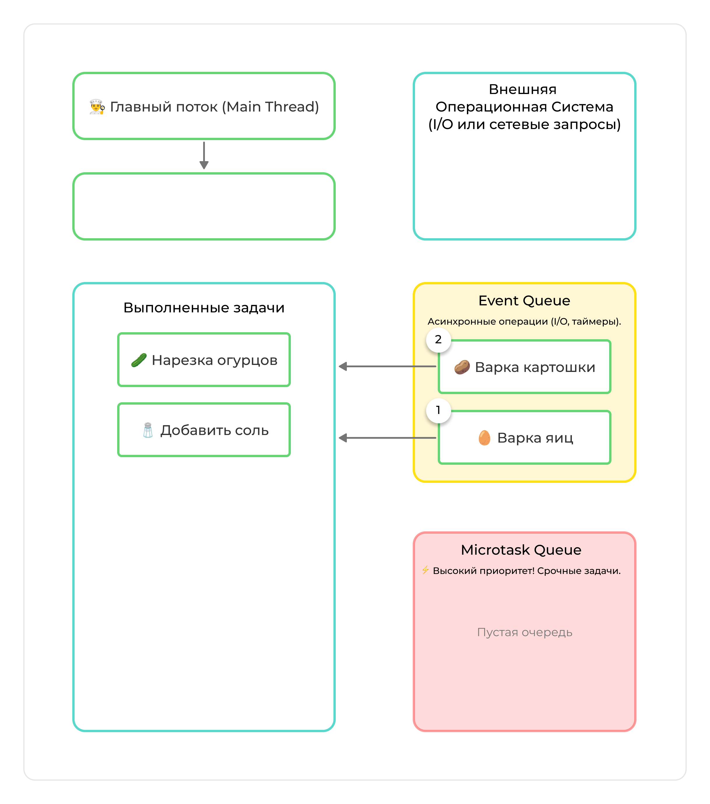
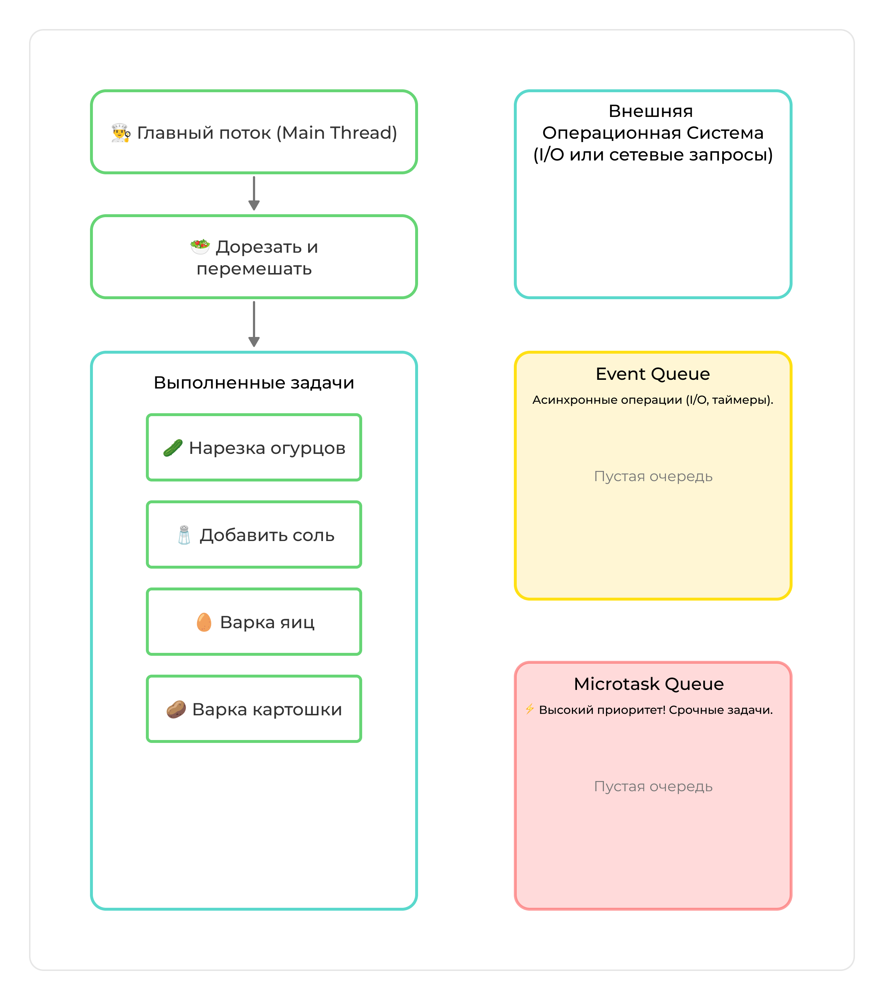
- Теперь когда оба асинхронных события выполнились, можно запустить синхронное событие "Дорезать и перемешать"
В коде это место
Dart
Future.wait([potatoFuture, eggFuture]).then((_) { // Выполнится ТОЛЬКО после того, как potatoFuture и eggFuture завершатся. mixIngredients(); });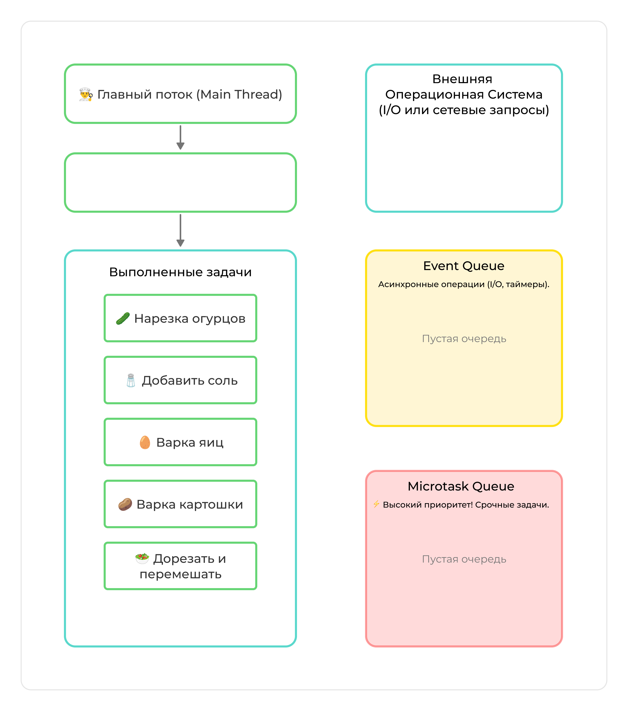
Эта аналогия идеально ложится на модель Dart: один "повар" (поток) эффективно управляет множеством задач, делегируя долгие операции "плите" (ОС) и реагируя на "звонки таймеров" (Future'ы, попадающие в Event Queue), в то время как в свободные промежутки выполняет быструю работу (синхронный код).